Caffe应用之人脸识别例子¶
流程¶
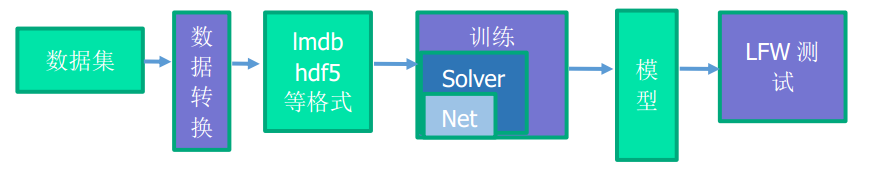具体操作¶
编译caffe
根据官方教程
训练测试阶段
将数据转换成caffe支持的格式（lmdb）
- 使用caffe自带的转换程序build/tools/convert_imageset
配置网络
XXX_net.prototxt
网络图
- 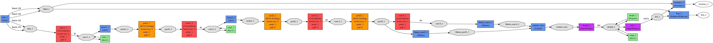
配置解决方案
- XXX_solver.prototxt
运行
训练
- build/tools/caffe train --solver=XXX_solver.prototxt 2>&1 |tee XXX.log
测试
部署阶段
数据输入
- 指定number、channel、height、width
配置网络
XXX_deploy_net.prototxt
网络图
- 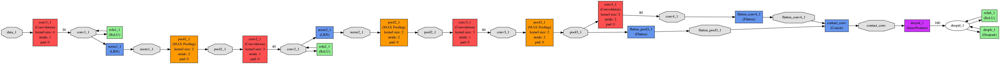
配置解决方案
- XXX_deploy.prototxt
执行
- Python接口
- caffe.Classifier(XXX_deploy_net.ptototxt, XXX.caffemodel, mean)
训练结果¶
通过解析日志文件XXX.log来获取。使用caffe自带的日志解析脚本。tools/extra/plot_training_log.py
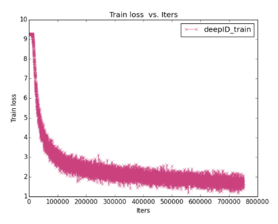 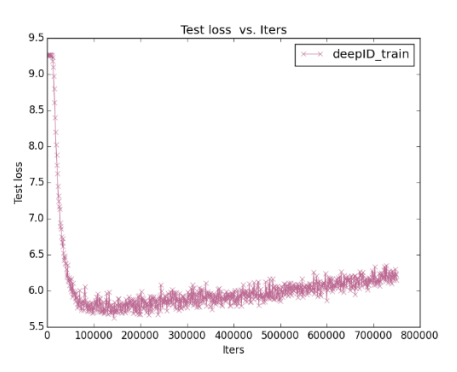 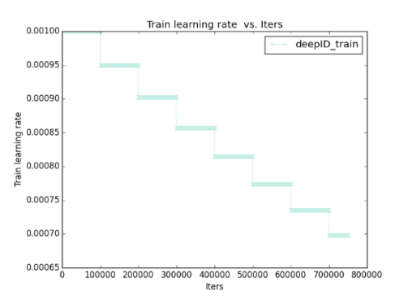 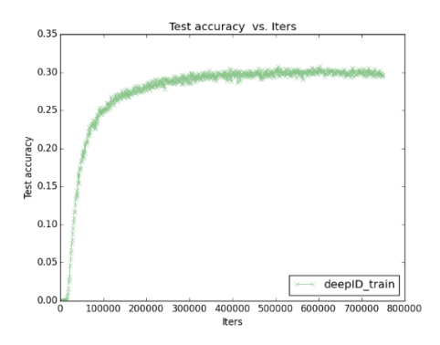Test accuracy是类的准确率(共1万类)。
特征图¶
获取每一层的特征图。 配置好部署阶段的网络（将训练测试阶段的Net修改输入，去掉最后的loss层），依次获取每层的特征。
================以下是数据层================
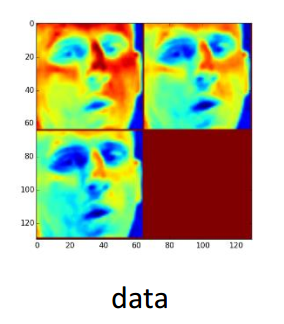================以下是卷积层1===============
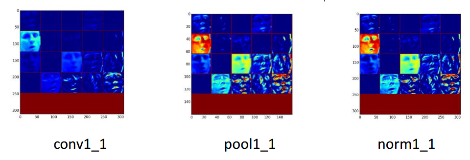================以下是卷积层2===============
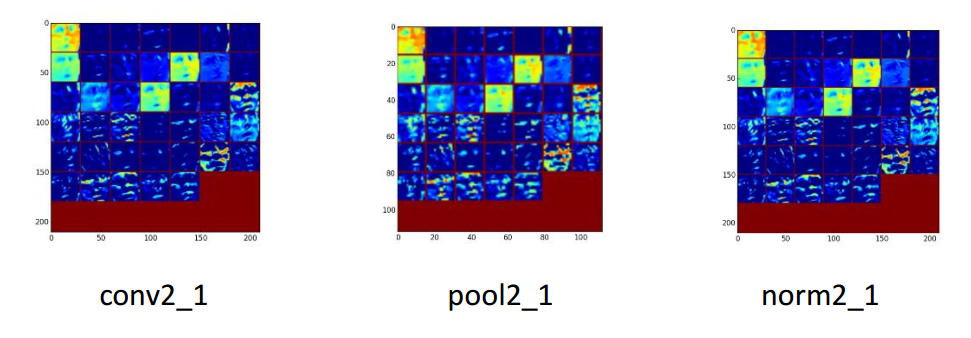================以下是卷积层3===============
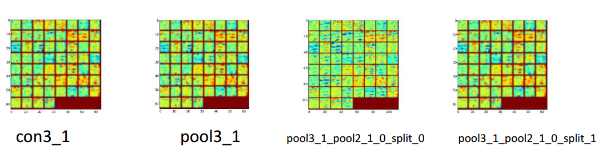================以下是卷积层4===============
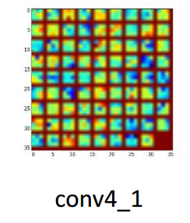详细解析¶
详细分析每一个网络的变化
论文网络
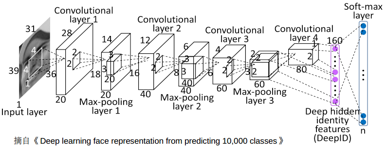论文网络每层分析
================以下是第一部分===============
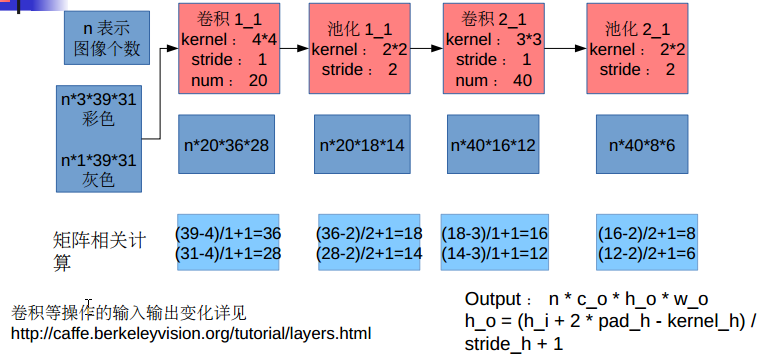================以下是第二部分===============
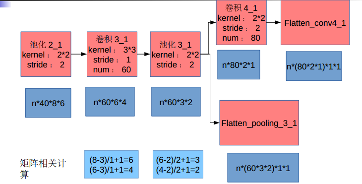================以下是第三部分===============
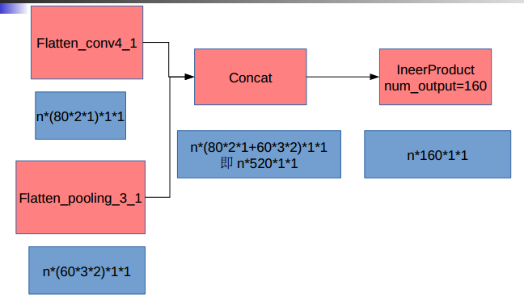实际网络每层分析
================以下是第一部分===============
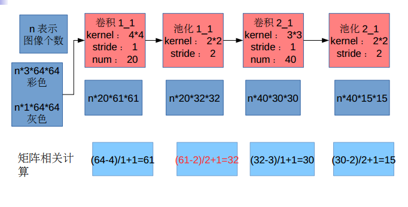================以下是第二部分===============
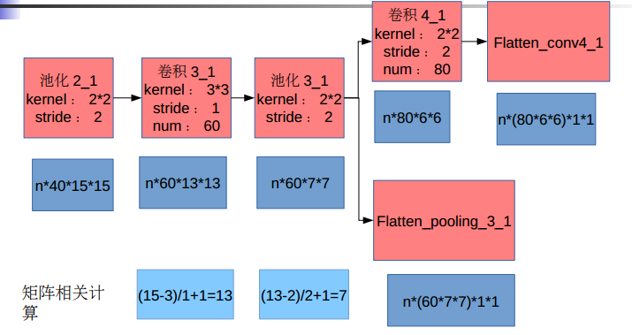================以下是第三部分===============
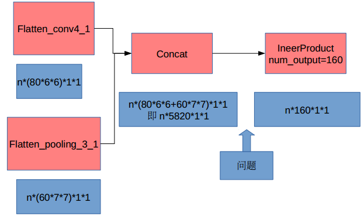